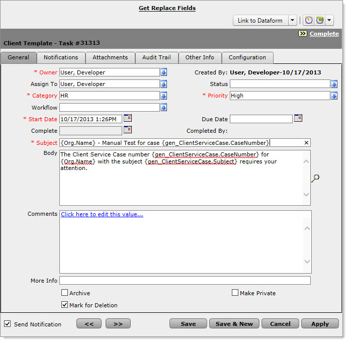
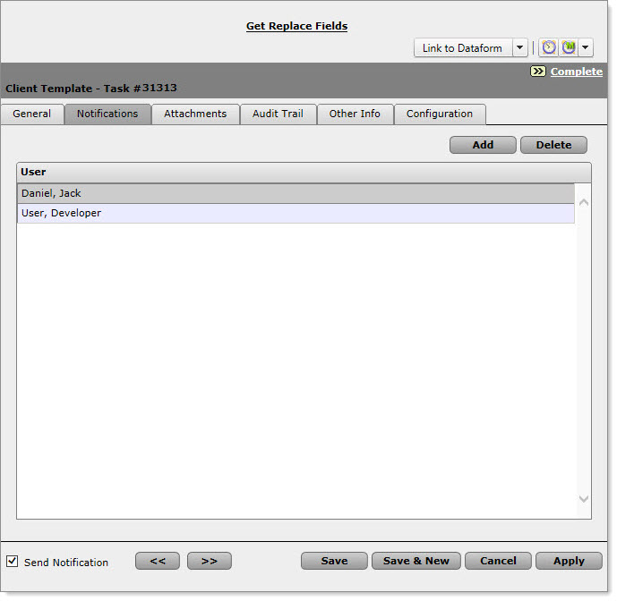
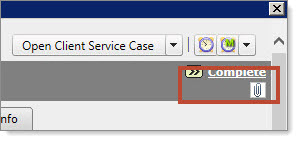
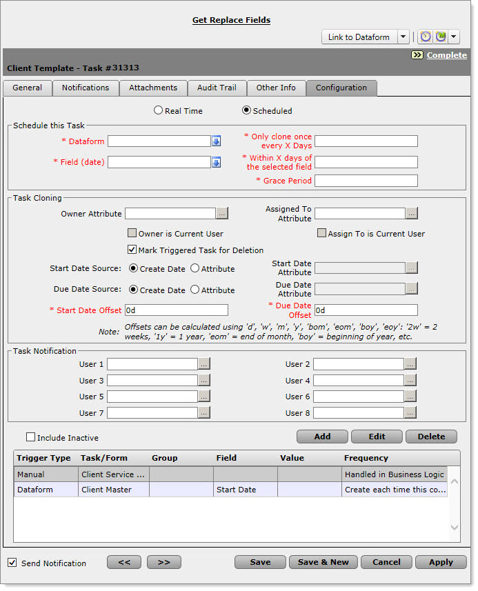
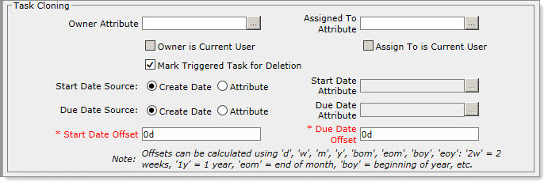
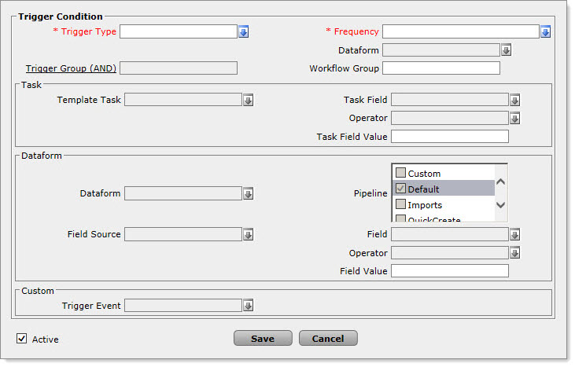
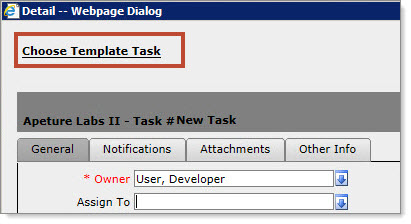
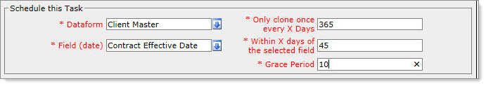

Making sure the right things happen at the right time is what workflow and business automation is all about. ClientSpace can help to insure business process workflow happens in a timely fashion through the configuration of Template tasks. These tasks are automatically generated based on triggers you set in the task manager of the Template workspace. The following document is designed to walk you through the configuration options available for template tasks, and help you to start automating your business processes through ClientSpace.
This functionality will be deprecated soon. Template tasks are being replaced by Workflow Channels. To read more about Workflow channels, review Configuring Workflow Channels.
Let’s discuss workflows. When multiple Tasks need to be generated either simultaneously or sequentially and also created automatically, this is known as workflow. For example, workflow can be triggered when a Client Termination Request Case is created or maybe if a field called FMLA eligible equals “Yes”. In either of these scenarios it may be appropriate to initiate the automatic generation of a set of Tasks that will be assigned to users dynamically.
You’ve probably heard the term Template Tasks. Template Tasks are really just pre-made Tasks that are either automatically generated in Real Time when something happens in ClientSpace, Scheduled based on a date field or Manually initiated on demand. Template Tasks can also be configured to serve the purpose of providing a notification to users when something happens.
Template task configuration allows for templated task generation to occur automatically based on trigger conditions set in the template. Tabs important to configuration of template tasks are:
General Tab

Owner / Assigned to fields can be set on the general tab, but will be overridden by any pertinent settings on the configuration tab.
You can use field replacement to insert dynamic text from the associated Organization, OrgOtherInfo or Dataform from which the task is triggered. For example, you trigger a template task from a Client Service Case where the type = “Unemployment” and Status =”New”. Because the task was triggered from the case, you can select items of data from this case for inclusion in the text of the generated template task. For any Template task you may also select data from the associated Organization. For more info about available fields for a particular dataform, click the Get Replace Fields report link at the top of the Form Header,
The format of this field replacement information is dataform-name dot field-name wrapped in curlybraces, so {gen_ClientServiceCase.Status} would provide the status of the case at the time the template task was generated. {gen_ClientServiceCase.Subject} would be replaced with the case subject and so on. For a complete list of available replace fields, click the link at the top of the template task, remember to only select a dataform for field replacement if it is associated with the Template task via task triggering.
Finally If you would like to include fields that are not on the triggering dataform, or the Org associated with the workspace you may log a case with NetWise to create a custom Server Data Proc for the triggering dataform. This is custom SQL code which allows you to pull information from any table in the system which has records related to either the Triggering Dataform, the associated Workspace or associated Organization. Once this is in place and configured you can reference these fields using the SDPC2 replacement code format SDPC2 dot field-name wrapped in curlybraces. To tie into the above example, a server data proc could be created to collect Employee and Employment information for an employee associated with an HR type case. You could then use these fields for field replacement as such: {SDPC2.EmployeeName} which would provide the Name from the associated Employee record, {SDPC2.EmploymentHireDate} could provide that employees Hire Date from his current active employment record and so on. For more information about this field replacement, read the article
Archive: Archived tasks will be cloned as Archived - these can be used to indicate milestones hit, or trigger notifications.
Mark for Deletion: ***Warning - Checking this box means you want to delete the Template task, not mark cloned tasks for deletion. To automatically delete the cloned task, Configure Mark for deletion on the configure tab.
Notifications Tab

Users to be notified of Task progress are automatically populated from the Owner / Assigned to fields on the General Tab.
If your business process requires additional ClientSpace users are notified, you may add additional notifications which will be copied to each of the tasks generated from this template.
Attachments Tab
Attaching a file here will attach an instance of the file to the cloned task. It is important to note however that the attached file(s) will not reside on the attachments tab of the cloned task, but instead will appear as linked files in the header of the cloned task.

Configuration Tab

This is where the rubber meets the road in Template tasks and is separated into three (or four) segments, depending on whether the task will be scheduled in real time, or scheduled based on a dataform date-time field (more on that later).
Real Time Scheduling Segments
Task Cloning
Task Notification
Trigger Configuration
Scheduled Segment
Schedule this Task
We will handle each of these in detail.
Task Cloning

Owner Attribute: The owner attribute can be dynamically set at time of task generation by “looking up” a user datatype field on any dataform associated with the template. So for example you could set the Owner to the Payroll Manager field on the Client Team dataform.
Assigned to Attribute: The assigned to attribute can be also dynamically set at time of task generation much like the Owner attribute.
Owner is Current User / Assign To is Current User: These options will set the owner or assigned to user to the logged in user who triggers the task.
Mark Triggered Task for Deletion: This sets the ‘Mark for Deletion’ option on the triggered task. This is most commonly utilized when generating Tasks for notification purposes. The tasks marked in this way will be deleted by the scheduled process 'Delete Marked Task'.
Start Date Source / Due Date Source: The start date and due date of the tasks can be set to either the date that the task is generated, or can be set to pull the date from a date type field on a dataform associated with the Template.
Start Date Offset / Due Date Offset: These fields provide the ability set the start and due date offset from the Start and Due date source by a certain amount of time. Offsets can only be calculated using one of the following codes: 'd', 'w', 'm', 'y', 'bom', 'eom', 'boy', 'eoy' '2w' = 2 weeks '1y' = 1 year 'eom' = end of month 'boy' = beginning of year, etc. These offsets also support 'bh' (business hours) and 'bd' (business days)
Task Notification
Task notification allows you to add up to 8 more dynamically generated notifications to the Task. Much like the owner attribute under Task Cloning, these fields look up a user datatype field on any dataform associated with the template.
Trigger Configuration

Trigger configuration allows you to fire a template task based on a given set of circumstances, or at a specific time.
Trigger Type: Trigger type determines what is the driving force behind the triggering of the task, this field can be configured with the following options:
Task: The task is triggered based on the state of another template task, the triggered task may be fired based on any of the following fields on the triggering task:
Category
Priority
Status
Workflow
Dataform: The task is triggered based on the state of a dataform field***, or data returned from one of the dataforms server data procs. Field equivalency operators are compared to the Field Value stated below the Operator and can include the following :
Equals - The field equals the Field Value exactly
Does not Equal - The field is not equal to the Field Value
Is Dirty - The field has changed and has not been saved
Greater Than - the field is Greater than the Field Value
Less Than - the field is Less than the Field Value
Greater Than Or Equal (to) - the field is Greater than or Equal to the Field Value
Less Than Or Equal (to) - the field is Less than or Equal to the Field Value
Empty - The Field has been made Empty and not been saved
Not Empty - The Field has been made Not Empty and not been saved
Custom: If standard task triggering definitions are not exactly what you need, NetWise can develop custom business logic for task triggering in your install. For more information, log an Extranet case.
Workspace Creation: The task is triggered when a Workspace is created. *Note: This option will lock the Frequency at 'Create each time this condition is met'.
Manual: Manual task triggering allows you to generate a template task manually on a dataform. When you choose Manual and select a dataform, a new link will appear in the header of the Add Task dialog.

When choosing to Add a new task to the associated dataform, prior to save the task will display a link allowing you to 'Choose Template Task'
Clicking this link will pre-fill the manually generated task information with the data from the chosen Template Task, allowing you to dramatically reduce the amount of time to create tasks that may not be automated.
Frequency: Frequency determines how often the Task Triggering will occur for the configured Trigger Type, and includes the following options
Create only once for this Condition/Trigger Object
Create only once for the target Workspace
Create each time this condition is met
Handled in Business Logic (Only for Custom Trigger Types)
Trigger Group (AND): This field allows you to group Trigger Conditions together so that ALL conditions in the group have to pass for the Task to be triggered. Trigger Groups do not work across dataforms unless those dataforms are in a related Tab Group, such as the Unemployment Claims form and the associated Tabbed forms. For Tab groups, the trigger from a tabbed dataform must include a trigger from the Parent Form Field of the tabbed dataform.
Workflow Group: This field allows you to clone a specific keyword to each template task that is searchable from the Task Dashboard later on. This makes it easier to group complex workflows and track specific functions of the workflow through the task manager. This is a text field, so if you are generating multiple template tasks in a complex workflow it may be advisable to copy and paste the Workflow Group, so the information is exactly the same on all Grouped tasks.
Schedule this Task: ClientSpace can generate Template Tasks automatically relative to a date field on any dataform. This section allows for the automation of your workflow, based on dataform date fields in the system. You can set frequency and grace periods to create automated task generation when trigger dates are hit.

Dataform: This is the dataform that will provide the triggering date field.
Field (date): The date field from which we will trigger task generation - this is your starting point.
Only clone once every X Days: Once a task is generated, do not trigger task generation again on this workspace for at least this number of days.
Within X days of the selected field: Trigger the task within X days of the triggering field. This can be a positive (5 days past the triggering date) or negative (10 days prior to the triggering date) number.
Grace Period: If for any reason the task does not get triggered, continue to attempt to trigger it for this number of days. This re-triggering of the un-triggered task is accomplished by the 'Generate Scheduled Task' scheduled process configured under System Admin > Advanced > Scheduled Processes.
In the example we will trigger a template task from the Contract Effective Date on the Client Master dataform, this task will trigger 45 days after the date. If for any reason it is not generated the system will continue to try to generate it for up to 10 days and once generated this task will not be created again for at least a year.
***One common dataform trigger configuration is to fire Template tasks based on creation of a particular type of Client Service Case type. A Client Service Case with a type of "Client Onboarding" for example could fire a series of tasks to make the client ready for processing including creating a client folder, Inserting the client into the payroll and accounting system, gather and validate employee enrollment documentation. The Case Type is a Parent form Datatype linking the Client Service Case to the Client Service Case Type dataform stored in the Admin workspace. This is what we call a foreign key relationship - the Case Type field stores the numerical key of the related Case Type dataform. So while the field displays "Client Onboarding" it actually stores the numeric value of the pkAdminCaseTypeID (the primary key of that particular case type on the gen_AdminCaseTypes table) - let's call it 299. In order to trigger a task from the creation of a Client Onboarding case we would need to set a dataform trigger on the task from the Client Service Case dataform where the Case Type = 299. You can find the case type ID by going to Admin Workspace > Client Service > Case Types - open the Case Type in question and look at the Administrative fields at the bottom, where you will find the ID.